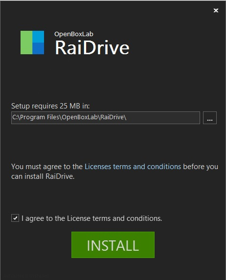
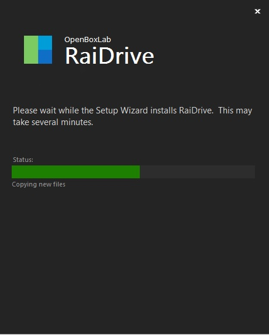
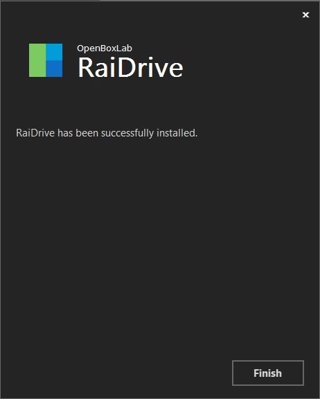
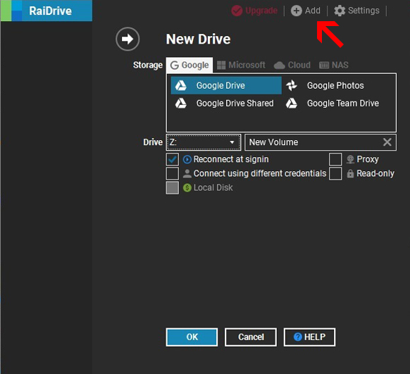
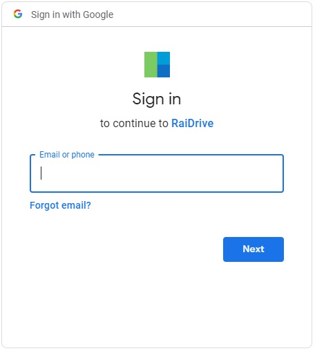
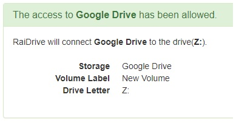
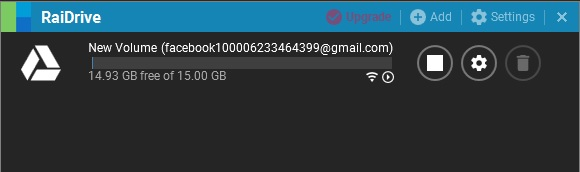
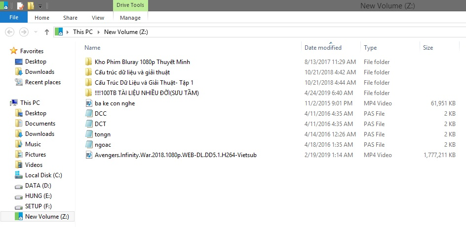
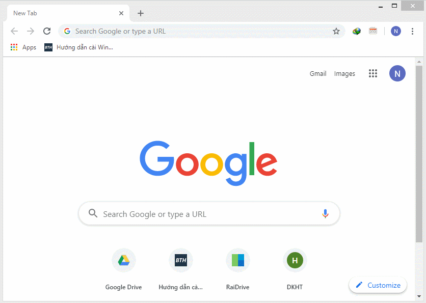

Tạo ổ đĩa Google Drive với Raidrive
July 31, 2019 | Thủ thuật | 4Raidrive- Công cụ miễn phí biến Google Drive thành ổ cứng riêng cho máy tính của bạn.
Lời mở đầu:Xin chào các bạn đến với blog của tui.
Nếu bạn đang sử dụng Google Drive (Các dịch vụ lưu trữ đám mấy khác nữa) để lưu trữ dữ liệu, thì chắc chắn bạn sẽ truy cập nhiều lần trong ngày. Mỗi lần như vậy bạn phải mở trình duyệt rồi tiến hành truy cập vào trang web, khá mất thời gian và bất tiện. Hôm này tui sẽ chia sẻ cách tạo một ổ cứng ảo GG Drive như thế này nài:
Bên Google có cung cấp 2 phần mềm như sau: Một là Backup and Sync dùng để sao lưu và đồng bộ hóa dự liệu GG drive của bạn; ngày qua ngày nó sẽ upload and download để đồng bộ hóa và đương nhiên sẽ chiếm dung lượng ổ cứng của bạn (Cái này mình khuyên dùng với mail và các dữ liệu quan trọng). Cái thứ high là Drive File Stream, tạo ổ cứng ảo cũng giống như RaiDrive, có điều phải là Gmail của doanh nghiệp thì mới dùng được, ví dụ như là mail của trường đại học cấp cho sinh viên đuôi .edu trên nền Google ấy, người thường làm sao xài. Xem thêm ở đây nha :3
RaiDrive khắc phục được 2 điều trên, nhưng nó éo phải của Google, bạn nên dùng tài khoản mail clone là đẹp nhất. Giới thiệu chút nhể: RaiDrive là phần mềm miễn phí giúp bạn tạo ra những ổ đĩa Cloud ngay trên máy tính của bạn. Bạn có thể mở, chỉnh sửa và lưu file với các ứng dụng yêu thích của mình mà không cần đồng bộ hóa hoặc trình duyệt.
-->> Download RaiDrive: Lờ inh Link nào Hoặc One Click Download (yên tâm méo có virus đâu)
- .NET Framework 4.6.2 trở lên
- Visual C++ Redistributable
- Google Drive
- Google Team Drive
- Google Photos
- OneDrive
- SharePoint
- Dropbox
- Box
- pCloud
- Yandex Disk
- Nhiều nhiều nữa
Sau khi download xong, bạn sẽ có một file RaiDrive_xxx.exe. Chạy file thôi.
Éo cần đọc điều khoản đâu, click vào dòng I agree to the License terms and condition rồi Install

waiting...

And... Done

Xong phải restart, tù vkl ^^
Sử dụng RaiDrive
Mở lên nào, click +Add 
- Mục Storage: Bạn chọn nhà cung cấp và dịch vụ lưu trữ
- Mục Drive: Chọn, sửa tên cái ổ đĩa, khỏi cần quan tâm cái này đâu
Bạn sẽ được chuyển qua trình duyệt mặc định để xác nhận cấp quyền cho RaiDrive truy cập vào Google Drive của bạn. Tiến hành đăng nhập vào tài khoản Google, gõ tài khoản và mật khẩu để cấp quyền 
Xuất hiện thông báo như nài là thành công, nếu ra khác thì tui chịu kaka.
Check RaiDrive sẽ thấy ổ cứng ảo của bạn hiện lên như zợ:
Và check ổ cứng mới tạo trong This PC. Giao diện sử dụng giống như các ổ đĩa thực khác :
Bạn cũng có thể thêm 1 vài tài khoản ứng với các ổ đĩa ảo khác. Tất nhiên cái giá phải đánh đổi là khi vào mấy cái ổ đĩa đấy sẽ thấy lag hơn các ổ đĩa cứng thực (Cũng còn tùy vào tốc độ Internet nhà bạn nữa).
Ờ thì mình thấy nó rất tiện để kéo phim về coi. Lên Google tìm kiếm các link phim Drive nào (phim lậu đấy ^^).
Add cả thư cmn mục phim về coi:

Cái App củ lìn này sau khi Add to my drive 1 thư mục thì phải restart máy nó mới hiện lên, tù vãi chưởng. Thế nên là trước khi bạn mở App thì Add đầy đủ nguồn vào (càng nhiều càng lag ^^).
https://drive.google.com/open?id=12utUMcOSTvkxI957Pwi5oOl4i0vBMFAR
Xàm lol tý nhở: Ngày trước cuộc sống nhạt nhẽo quá nên tui kéo cái thư mục phim trên về coi. Tui lướt một vòng xem có phim nào tên hay hay tý. Tự dưng dừng lại ở phim Hot boy nổi loạn cứ tưởng phim học đường. DKM phim mặn chát, mặn hơn muối, xem xong muốn bay cmn não luôn. Chuyện tình yêu đầy những ngọt ngào với cả trắc trở của ... 3 thằng gay. Quỳ !
p/s: Bài viết có đi tham khảo + chôm chỉa từ các web khác: gdrive.vip, raidrive.com, ...